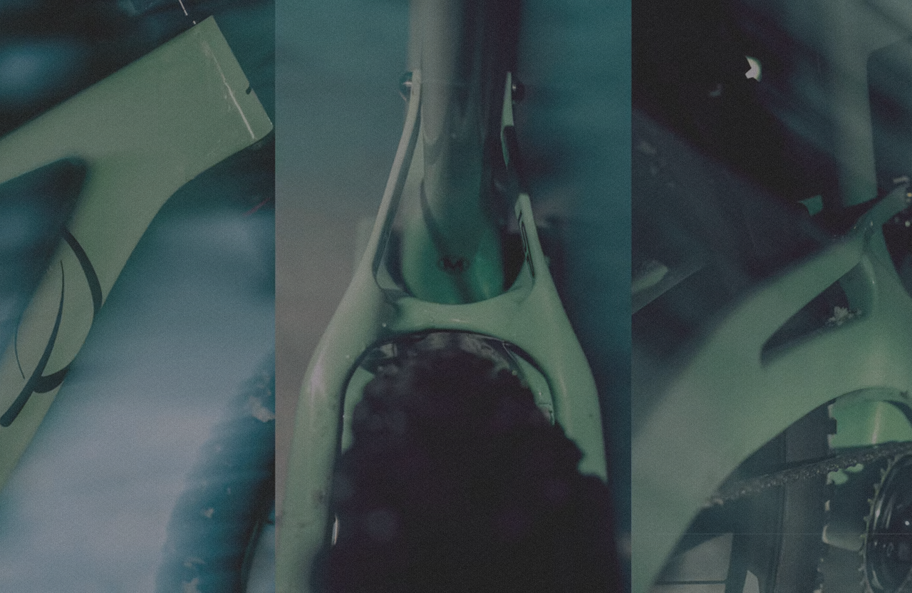
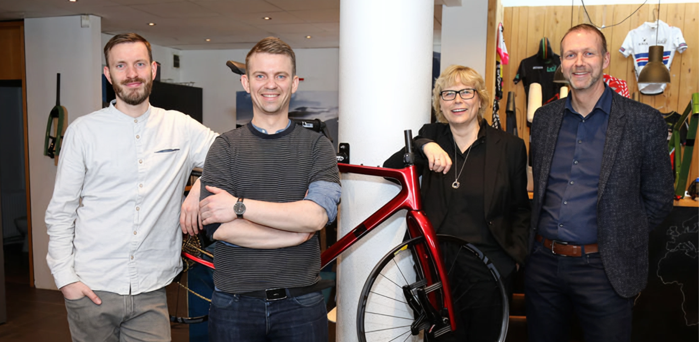
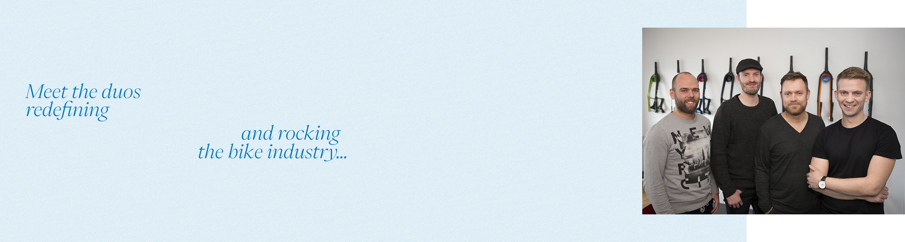
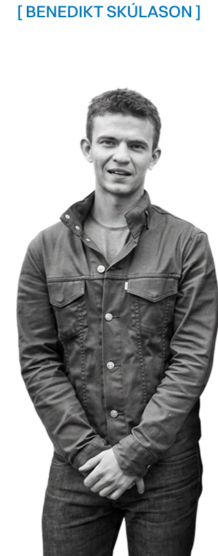
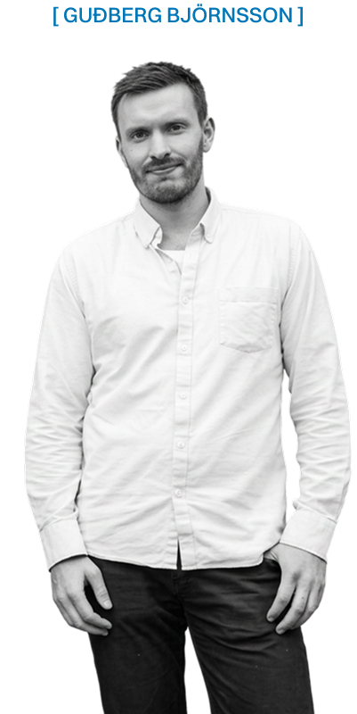
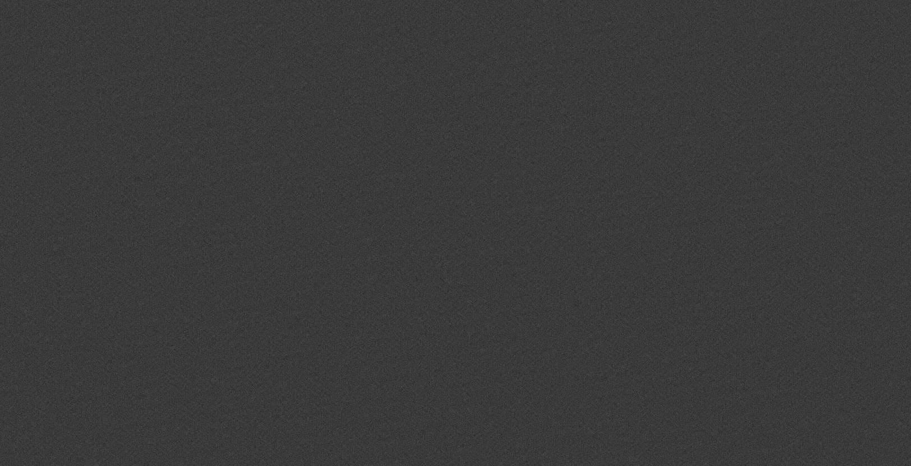
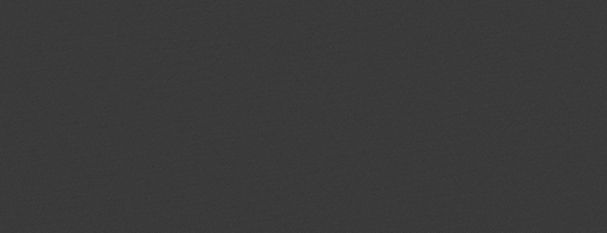

Where biking passion meets technical engineering and performance
Elja by Lauf Cycles wins Product of the
Year at the 2025
Icelandic Awards

[2025]
Elja by Lauf Cycles is their first mountain
bike. It is a full suspension bike with characteristics from a
mountain bike, a racing bike, and an urban commute, merging
performance, versatility, and everyday usability in one design.
Every
aspect of its design is guided by the goal of delivering an
exceptional riding experience, allowing riders to move between
environments, from rugged trails to city streets due to quality
and durable product materials, without compromising performance or
comfort. Thoughtful user-centered design, advanced engineering,
and sustainable craftsmanship has allowed for innovative impact by
Lauf Cycles in the bike industry.

Meet the duos
redefining


and rocking
the bike industry...
Founded in 2011 out from a garage by two lifelong friends, Benedikt Skúlason and Guðberg Björnsson, their journey started based on their love for biking in the Icelandic natural lands and driven by a dream to create better bikes. Lauf Cycles create bikes with the Icelandic environment condition in mind, where the riding experience is the pinnacle of their work. The co-founders are driven by the desire to reinvent for the better and leave a lasting impact in the bike industry.
Benedikt Skúlason holds a Master's degree in engineering from Manhattan, Columbia, USA. He is also a biking enthusiast and a weekend XC MTB racer. Guðberg Björnsson is a product designer.
The motivation
that keeps them going...
In the beginning, Benedikt was driven by understanding composites—that was how he had entered the bike industry. He was studying how to make his own carbon bike, and through extensive research and fascination with the material, he decided to start from the ground up to make his own.

"We strive on outside-of-the-box thinking when it comes to engineering and creating products that are incredibly fun to play with. We are a company team with fresh, youthful spirit like an engineering kindergarten, and also avid cyclists."
The legacy in
the bike industry...
Being able to produce bikes right at home in Iceland, Elja has made a positive impact on the local cycling community in a way it gets people excited about it. We want to create bike technology that is pure and harmonious. We are all about performance, but fundamentally Lauf is about riding more. And, riding more means you have more fun, and when you have more fun, you go faster.


"Our cycling passion is contagious and we hope riders would feel it too when riding with us. On our bikes, you would only hear the beautiful sounds of nature and enjoy fresh air as you explore the Icelandic landscapes."